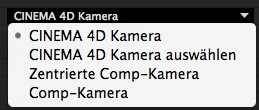

CINEWARE in After Effects
MAXON CINEMA 4D Szenen und Animationen lassen sich mit CINEWARE direkt in eine Adobe After Effects Komposition laden, dort anzeigen und auch innerhalb von After Effects rendern.

Wissenswertes rund um den CINEMA 4D / AfterEffects-Workflow
In der aktuellen Version von Adobe After Effects ist es möglich, komplexe 3D-Elemente, Szenen und sogar Animationen aus MAXON CINEMA 4D direkt in einer After Effects Komposition zu platzieren. Durch die enge Verbindung der beiden professionellen Applikationen, wird es dem After Effects Benutzer noch einfacher möglich, beeindruckende Motiongraphics-Kompositionen in kurzer Zeit zu erzeugen.
Um ein effektives und komfortables Arbeiten zu gewährleisten, wurde die leistungsfähige 3D-Renderengine CINERENDER aus CINEMA 4D so in After Effects integriert, dass platzierte CINEMA 4D Ebenen in der Komposition ohne Umwege direkt gerendert werden können. Ein Wechsel der Applikation oder, je nach Workflow, ein erneutes Anfordern aus einer 3D-Abteilung entfällt.
Der Einstieg in diese neue, faszinierende 3D-Welt ist sehr einfach. Haben Sie noch keine lizensierte Version von CINEMA 4D zur Verfügung, können Sie mit der in After Effects mitgelieferten Version von CINEMA 4D Lite Ihre ersten Schritte in 3D gehen.
Als Werkzeuge für eine professionelle Arbeitsumgebung empfehlen wir CINEMA 4D Broadcast und CINEMA 4D Studio.
Siehe auch www.maxon.net
Einbinden und Bearbeiten von MAXON CINEMA 4D Dateien
Bereits bestehende CINEMA 4D Dateien (.c4d), können direkt als Assets in das Projektfenster von Adobe After Effects geladen und anschließend als CINEMA 4D Ebene in einer Komposition platziert werden. Alle Einstellungen dieser CINEMA 4D Ebene werden als Effekt "CINEWARE" im Effekt-Fenster angezeigt. Weitere Effekte können wie gewohnt zusätzlich auf der CINEMA 4D Ebene hinzugefügt werden. Diese wirken dann auf das jeweilige Rendering-Ergebnis aus der Renderengine CINERENDER.
Existiert noch keine CINEMA 4D Datei, so kann eine entsprechende Datei über das After Effects Menü
Sollte keine Vollversion von CINEMA 4D Version auf dem System installiert sein, so öffnet sich die mit After Effects ausgelieferte funktionsreduzierte CINEMA 4D Lite. Nach Erzeugen einer Szene kann diese über
Möchte man während der Arbeit in After Effects Änderungen an einer bereits importierten und platzieren CINEMA 4D Datei vornehmen, so wählen Sie das Asset bzw. eine der platzierten CINEMA 4D Ebenen und rufen Sie mit
Durch das Speichern einer in CINEMA 4D geänderten Datei, wird das Projekt in After Effects automatisch aktualisiert.
Konfigurieren der Anzeige / Rendereigenschaften
Durch die Integration der CINEMA 4D Render-Engine CINERENDER werden platzierte CINEMA 4D Ebenen direkt in After Effects gerendert. Hierdurch bleibt dem After Effects Benutzer bis zum finalen Rendern seiner Komposition die volle Kontrolle über alle seine 3D-Elemente. Einstellungen für die Qualität des Renderings werden in den Effekt-Einstellungen CINEWARE getroffen.
Zu beachten ist hierbei, dass jede CINEMA 4D Ebene prinzipiell seine eigenen Render- und Display-Einstellung mitbringt.
Alle Instanzen einer CINEMA 4D Datei innerhalb einer Komposition synchronisieren ihre Render- und Display-Einstellung, es sei denn die Option Ebenen synchronisieren ist deaktiviert.
Jeder gerenderte Frame wird gecached, um eine schnellere Arbeit zu ermöglichen. Bei der Verwendung von reduzierten Auflösungen bzw. automatischer Auflösung werden die CINEMA 4D Ergebnisse ebenfalls mit reduzierter Auflösung gerendert.
Um ein zügiges Arbeiten zu gewährleisten, kann während der Arbeit die Renderer-Eigenschaften auf Software heruntergestellt werden. Hierbei werden Texturen in geringer Auflösung angezeigt, Shader werden limitiert ausgewertet.

 Software - Entwurf - Final
Software - Entwurf - Final
Zudem stehen noch Optionen zum Deaktivieren von Texturen und Shadern zur Verfügung (im Software Rendering werden Texturen & Shader und im Draft Rendering nur Texturen deaktiviert), sowie das Verhindern von Pre-Calculations für Dynamics- oder Partikel-Simulationen. Für das finale Rendering sollten diese Berechnungen auf alle Fälle wieder aktiviert oder entsprechende Simulationen innerhalb der CINEMA 4D Szene gecached (gebacken) werden.
Siehe auch Dynamics Caching und Partikel backen.
Auch lässt sich das Rendering sehr stark beschleunigen, indem man mit der Option Texturen im RAM behalten die Texturen im Speicher behält.
Umgang mit Kameras und CINEMA 4D Szenen-Elemente
Genau wie After Effects kann auch eine CINEMA 4D Datei beliebig viele Kameras mit unterschiedlichen Eigenschaften und natürlich Animationen enthalten. Um eine passende Integration zu schaffen, muss somit eine Synchronisation von Kamera-Bewegungen erfolgen.
Dies geschieht in der Rubrik Projektvoreinstellungen innerhalb der CINEWARE-Einstellungen.
Hier kann gewählt werden, ob eine der vorhandenen CINEMA 4D Kameras zur Berechnung genutzt oder eine After Effects Kamera verwendet werden soll.
Es stehen 4 Optionen zur Verfügung:

Bei der Option CINEMA 4D Kamera wird die im Moment aktive Kamera in der CINEMA 4D Szene verwendet, wogegen man mit Auswählen CINEMA 4D Kamera eine der bestehenden CINEMA 4D Kameras auswählen kann. Zu beachten ist, dass diese Kameras bereits in der CINEMA 4D Szene angelegt sein müssen.
Die nächsten beide Optionen bieten dem After Effects Benutzer an, Kameras zu erzeugen. Hierbei ist der Unterschied zwischen beiden Kameras das Koordinatensystem. In CINEMA 4D existiert ein Koordinatensystem, dessen Ursprung im Mittelpunkt der Szene liegt und dessen Achsen von dort aus positiv wie negativ in den Raum zeigen. Bei After Effects gibt es einen Koordinaten-Nullpunkt in der linken oberen Ecke der Komposition.
Daher bieten die CINEWARE-Einstellungen zwei Möglichkeiten, mit After Effects Kameras zu arbeiten. Bei der Option Comp Kamera sind die Koordinaten zwischen After Effects und CINEMA 4D gleich. Da das für langjährige After Effects Benutzer evtl. verwirrend sein könnte, lassen sich mit der Option Zentrierte Comp Kamera die beiden Koordinatensysteme angleichen.
Sollte man mit Hilfe der Funktion Extrahieren eine CINEMA 4D Kamera nach After Effects extrahieren, empfiehlt es sich, die Option Comp Kamera zu aktivieren. Ansonsten verschiebt sich die Ansicht durch das abweichende Koordinatensystem.
Ebenen
Zur Organisation komplexer 3D-Szenen besitzt CINEMA 4D ein leistungsstarkes Ebenen-System. Dessen Aufgabe ist nicht eine Stapelreihenfolge wie in After Effects zu bilden, sondern vielmehr das Gruppieren von Szenenelemente zum vereinfachten Zugriff. Beispielsweise können so einzelne Teile von Szenen per Ebene separat ein- und ausgeblendet werden.
Aus After Effects heraus lassen sich diese CINEMA 4D Ebenen einzeln aktivieren und deaktivieren. Es werden in der CINEMA 4D Ebene nur noch die Elemente der aktiven CINEMA 4D Ebenen gerendert. Somit können Sie die gleiche CINEMA 4D Datei mehrfach in einer Komposition als eigene CINEMA 4D-Ebene verwenden und dabei unterschiedliche Teile der Szene anzeigen.
Beispielsweise können Sie so 3D-Elemente des Hintergrunds und des Vordergrundes trennen und in der After Effects Komposition entsprechend stapeln sowie mit After Effects Footage kombinieren.
mittels Default Ebene in Ebenen setzen aktiviert oder deaktiviert werden können. Diese Option ist nicht vorhanden, wenn CINEMA 4D R15 oder älter zum Rendern benutzt wird. Stattdessen sind dann alle CINEMA 4D Elemente, die nicht auf einer CINEMA 4D Ebene liegen, immer in jeder CINEMA 4D Ebene aktiv sind.
Multipassing
Unter Multipassing versteht man in der 3D-Welt den Prozess, ein Rendering nicht in einem monolithischen Bild herauszuschreiben, sondern einzelne Bildelemente zu trennen.
Diese werden anschließend im Compositing zusammengesetzt, was unter anderem die Möglichkeit mit sich bringt, Farbkorrekturen vorzunehmen. Ein typisches Szenario wäre hier im Rendering die unterschiedlichen Oberflächen-Reflektionen (Diffuse, Specular, Shadow, ... ) separat auszugeben und anschließend in After Effects mit entsprechenden Ebenen-Modi zusammen zu setzten.
Für das schnelle Aufbauen einer entsprechenden Komposition gibt es in den CINEWARE-Einstellungen eine eigene Schaltfläche Bilderebenen erstellen. Es werden eine Reihe von CINEMA 4D Ebenen erzeugt, in der jeweils ein einzelnes Render-Element aktiv ist. Über die Schaltfläche Multi-Pass setzen... kann ausgewählt werden, was auf der jeweiligen CINEMA 4D Ebene angezeigt wird.
Möchte man weitere Ebenen für einzelne Render-Element erzeugen, so kann man eine Ebene duplizieren und über oben genannte Schaltfläche das gewünschte Element auswählen.
Eine weitere, häufige Anwendung des Multipassings, ist die Ausgabe von sogenannten Object-Passes, die in After Effects beispielsweise als Luma-Matten zur separaten Korrektur von einzelnen Elementen eingesetzt werden. Zu beachten ist, dass mindestens der Rendermodus Standard (Entwurf) aktiviert sein muss, damit ein einzelner Pass gerendert wird.
Zusätzliche Passes können nur über das Compositing-Tag ausgegeben werden.
Für die Konfiguration von Object-Passes müssen in der CINEMA 4D Szene die entsprechenden Objekte mit einem Compositing-Tag versehen, und darin die gewünschte Gruppen-ID vergeben werden. Anschließend muss in den Render-Settings in CINEMA 4D das Multipassing aktiviert und die gewünschten Object-Passes hinzugefügt werden. Da After Effects die Namen der Passes anzeigt, ist es sinnvoll, hier bereits eine entsprechende Benamung vorzunehmen.
Zu beachten ist jedoch, dass in diesem Austausch zur Zeit die Arbeit mit Posteffekten aus CINEMA 4D noch nicht unterstützt wird. Auch ist die Trennung der einzelnen Lichter (Licht-Multipassing) auf diesem Wege noch nicht möglich.
Um ein optimales Ergebnis bei der Arbeit mit Multipasses zu erreichen, ist zu empfehlen, dass in den Projekt-Einstellungen von After Effects auf Linearen Workflow (linearized Working Space) umgeschaltet wird und dass man möglichst mit einer Farbtiefe von 32-Bit Float arbeitet. Ansonsten können Artifakte auftreten.
Austausch von Szenen-Informationen
Um Kamerafahrten und auch Szenenbeleuchtungen zwischen CINEMA 4D und der After Effects Komposition anzugleichen, besteht jederzeit die Möglichkeit, in der CINEMA 4D Szene gesetzte Kameras und Lichter, inklusive deren Animation in die After Effects Komposition zu übertragen. Hierbei werden, soweit vergleichbare Parameter existieren, Kamera- und Lichteigenschaften angepasst. Mit einem Klick auf die Schaltfläche Extrahieren im Bereich Befehle der CINEMA 4D Settings, werden entsprechende Elemente in der After Effects Komposition angelegt.
Zu beachten ist, dass nur Lichter übernommen werden, die in der CINEMA 4D Szene im Tab Allgemein die Option Export to Ae gesetzt haben. Dies ist standardmässig bei jedem Lichtobjekt und jeder Kamera der Fall.
Auch können bereits animierte After Effects Kameras in die CINEMA 4D Szene übertragen werden. Hierfür steht die Schaltfläche Merge im Bereich Befehle zur Verfügung.
Für den Weg aus After Effects nach CINEMA 4D besteht die Möglichkeit, aus einer bestehenden Komposition über
Referenzen verwenden
Das Ergebnis einer CINEMA 4D Ebene in After Effects ist eine 2D-Ebene. Um jedoch effektiv 3D-Ebenen aus After Effects in einer Komposition zu platzieren, kann es hilfreich sein, Informationen über die Position von CINEMA 4D Objekten als Farbflächen/Solids geliefert zu bekommen. Hierfür müssen in der CINEMA 4D Szene entsprechende Polygon-Objekte oder Ebenen mit einem Externe Komposition-Tag belegt werden. Auf Wunsch kann in diesem die Option Farbflächenebene aktiviert und bereits eine Größe für die Farbfläche in After Effects gesetzt werden.
Um entsprechende Daten einzulesen, können Sie in den CINEWARE-Einstellungen die Schaltfläche Extract verwenden.
Um Probleme beim Importieren von CINEMA 4D Szenen in After Effects zu vermeiden, sollten in den CINEMA 4D Programmvoreinstellungen die Optionen Polygone für Melange speichern und Animation für Melange speichern aktiviert sein.
Übersicht über die einzelnen Parameter
Anbei die Kurzerklärungen der einzelnen Parameter der CINEWARE-Einstellungen. Eine funktionelle Erklärung im Kontext der praktischen Anwendung liegt im oben stehenden Text vor.
Optionen
Wenn Sie zum Rendern einen anderen Renderer als den voreingestellten CINERENDER verwenden wollen, also z.B. den einer neueren oder anderen CINEMA 4D-Version, so können Sie hier den Pfad zur entsprechenden, ausführbaren CINEMA 4D-Datei (*.exe bzw. *.app) angeben.
Beachten Sie, dass die anderen CINEMA 4D-Versionen lizenziert werden müssen, wenn diese als Renderer verwendet werden sollen!
Dieser Pfad dient zur Definition der CINEMA 4D-Version, die zum Bearbeiten einer CINEMA 4D-Datei verwendet werden soll. Angenommen, Sie haben eine neue CINEMA 4D-Version installiert und wollen die Datei mit dieser bearbeiten; dann müssen Sie den Pfad zur entsprechenden, ausführbaren CINEMA 4D-Datei (*.exe bzw. *.app) hier angeben.
Hier wird der Kommunikationsport zwischen CINEWARE und dem integrierten CINEMA 4D Renderer (CINERENDER) festgelegt. Sollte diese Einstellung geändert werden müssen, benötigt After Effects einen Neustart.
Definiert ob die Render- und Projekteinstellungen der Ebene für alle anderen Ebenen dieser CINEMA 4D Datei in der Komposition übernommen wird. Ebenso legt es fest, ob andere Ebenen diese Ebeneneinstellungen verändern können. Diese Option ist nur vorhanden, wenn sich mehr als eine Instanz der CINEMA 4D Datei in der Komposition befindet.
Rendereinstellungen
Da die Rechenzeiten bei komplexen Szenen naturgemäß auch durchaus zeitintensiv ausfallen kann, bietet CINEWARE drei unterschiedliche Rendermodi:
Die Darstellung entspricht weitgehend dem des CINEMA 4D Viewports. Sie dient zur Preview der Szene. Shader und Multipasses werden aus Geschwindigkeitsgründen nicht angezeigt.
Ist eine um Antialising reduzierte Darstellungsart, die als Vorstufe zum finalen Rendering nutzbar ist.
Rendert die Szene mit den in der CINEMA 4D Szene eingestellten Render-Parametern.
Software - Entwurf - Final
Definiert die Darstellungsart der Anzeige. Es wird entweder die Originaleinstellung der CINEMA 4D Szene benutzt oder zum flüssigerem Arbeiten auf Wireframe oder Box reduziert.
Deaktiviert die Darstellung von Texturen für schnellere Navigation.
Deaktiviert das Berechnen von Dynamik-, Kleidungs- und Partikel-Simulationen, sowie einige MoGraph-Simulationen, um Rechenzeit bei der Darstellung zu sparen. Die Ergebnisse dieser Prozesse sind daher nicht verbindlich. Für die finale Ausgabe sollte diese Option nicht aktiviert sein, oder die Simulationen sollten bereits in der CINEMA 4D Datei gecached werden.
Diese Option sollte niemals für das Finale Rendering aktiviert sein, weil sonst das Partikelsystem, einige MoGraph-Funktionen, Dynamics und Cloth korrekt angezeigt und gerendert werden.
Beschleunigt die Darstellung, da Texturen nicht neu berechnet werden, sondern im Speicher gehalten werden. (Folge: falls Texturen geaendert werden wird das nicht festgestellt)
Purge Memory
Nach ausdauernder Nutzung kann der Render Server langsamer werden, da er die bearbeiteten Szenen speichert. Sollte das Rendering langsamer oder weniger schnell ansprechbar erscheinen, kann dieser Knopf zum Löschen des Render Server Speichers benutzt werden. (Diese Option ist erst ab CINEMA 4D R16 vorhanden)
Projekteinstellungen
Bestimmt die Kamera, die für die Anzeige der CINEMA 4D Ebene verwendet wird.
Die voreingestellte und aktive Kamera in der CINEMA 4D Szene
Bietet die Möglichkeit, eine Kamera aus der CINEMA 4D Szene zu wählen.
Diese Kamera entspricht dem After Effects Koordinatensystem.
Die Koordinaten zwischen After Effects und CINEMA 4D werden gleich angezeigt. Da jedoch die CINEMA 4D Koordinaten von denen in After Effects abweichen, muss der Effects Benutzer hier umdenken. Extrahiert man eine CINEMA 4D Kamera, muss diese Option verwendet werden, da sich ansonsten die Ansicht in After Effects auf die CINEMA 4D Szene verschiebt.
Kamera setzen
Befinden sich in einer CINEMA 4D Szene mehr als nur die Default-Kamera, so lassen sich diese über den Button Kamera setzen auswählen.
Enthält die CINEMA 4D Szene Ebenen, so lassen sich diese hier auswählen. Es werden nur noch Elemente in der CINEMA 4D Szene verwendet, die dieser CINEMA 4D Ebene zugeordnet sind. Somit können einzelne Objektgruppen einzeln in After Effects in CINEMA 4D Ebenen angezeigt werden.
Ebenen setzen
Die in der CINEMA 4D Szene vorhandenen Ebenen lassen sich hier auswählen.
Multi-Pass (Linearer Workflow)
Durch Aktivieren von CINEMA 4D Multi-Pass, können für die CINEMA 4D Szene einzelne Passes gewählt werden. Diese sind vordefiniert, auch wenn in der CINEMA 4D Szene selbst das Multi-Passing noch nicht aktiviert wurde.
Möchte man weitere spezielle Passes, wie zum Beispiel Objekt-Kanal, muss man diese in der CINEMA 4D Szene vorbereiten und auch in der CINEMA 4D Rendervoreinstellung Multipass aktivieren.
Multi-Pass setzen...
Hier lassen sich die einzelnen Passes auswählen, die man in der Timeline benutzen will.
Beachten Sie, dass Post-Effekte (Hair, Sketch and Toon sind z.B. CINEMA 4D-intern Post-Effekte) nicht unterstützt werden.
Die in CINEMA 4D vordefinierten Multi-Passes können durch Anhaken von definerte Multi-Passes und durch Drücken auf Bilderebenen erstellen, in die Zeitleiste extrahiert werden.
Mit anderen Worten: Es werden nur die Multi-Passes extrahiert, die in CINEMA 4D bei den Rendervoreinstellungen eingestellt wurden.
Bilderebenen erstellen
Wird nur der Button Bilderebenen erstellen ohne Anhaken des Feldes definiere Multi-Passes gedrückt, werden alle möglichen Multi-Passes in die Timeline extrahiert.
Posteffekte werden im Multi-Pass-System nicht unterstützt.
Befehle
Die aktive Kompositions-Kamera aus After Effects wird in die CINEMA 4D Szene geschrieben. Diese Kamera kann bereits animiert sein.
Extrahieren
Alle in der CINEMA 4D Szene vorhandenen Kameras und Lichter mit deren Animationen und Einstellungen, werden in die After Effects Komposition übertragen und erscheinen in der Timeline als Ebenen.
Wenn Polygon-Objekte mit einem External Composition Tag versehen werden, werden diese als NULL-Ebenen als Positions-Referenz in die Komposition platziert bzw. als Farbfläche erzeugt.